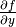

Глава 9 – Редактор формул LibreOffice Math¶
Что такое Math?¶
Math — модуль LibreOffice для написания математических и химических формул. Math обычно используется как редактор формул для текстовых документов, но также может быть использован в других типах документов (презентациях, таблицах, рисунках) или автономно. При использовании внутри Writer, формула обрабатывается как объект в текстовом документе.
Примечание
Math используется для записи формул в символическом виде, как в формуле (1), и не предназначен для расчетов. Для расчета числовых значений используйте модуль Calc (см. руководство по Calc).
(1)
или
Начало работы¶
Math может быть запущен автономно или вызван из других модулей LibreOffice (Writer, Impress, Calc, Draw).
Создание формулы в виде отдельного документа¶
Чтобы создать формулу в виде отдельного документа, откройте модуль LibreOffice Math одним из следующих способов:
- В Стартовом центре выберите Формула Math;
- Если LibreOffice уже открыт, в строке меню выберите Файл ‣ Создать ‣ Формулу.
- На стандартной панели инструментов нажмите на треугольник справа от кнопки Создать и выберите Формулу.
Откроется пустой документ Math (рисунок Новый документ Math).
В верхней части находится окно предварительного просмотра, в котором отображается вводимая формула. В нижней части находится редактор формул, в который вводится код разметки формулы. Слева находится прикрепляемая панель элементов.
Вставка формулы в документ Writer¶
Чтобы вставить формулу в документ Writer, откройте документ и выберите пункт Вставка ‣ Объект ‣ Формула.
Редактор формул откроется в нижней части окна Writer. А в документе появится небольшой прямоугольник с серыми границами, в котором будет отображаться формула. В зависимости от настроек, может также появиться панель элементов.
После завершения ввода формулы, можно закрыть редактор клавишей Esc или щелкнув область за пределами формулы в основном документе. Двойной щелчок левой кнопкой мыши по формуле снова откроет редактор, позволяя изменить формулу.
Формулы вставляются в качестве объектов OLE. В текстовых документах Writer, формула вставляется с привязкой как символ по умолчанию, чтобы не разрывать текст. Как и у любого другого OLE-объекта, привязка формулы может быть изменена, чтобы сделать её плавающей. В Calc, Impress и Draw документах формулы внедряются как плавающие OLE-объекты.
Чтобы упростить процесс вставки формул, можно добавить кнопку Формула на стандартную панель инструментов или создать сочетание клавиш. Смотрите Главу 14: Настройка LibreOffice.
Ввод формулы¶
Для написания формулы в Math используется специальный язык разметки, состоящий из команд, которые вводятся в редактор формул. Например, команда %beta вводит символ бета (β) греческого алфавита.
Мнемонически, язык разметки формул напоминает чтение формулы по-английски. Например, команда a over b преобразуется в  .
.
Вводить формулу можно тремя способами:
- Выбрать символ на Боковой панели или панели Элементы;
- Щелкнуть правой кнопкой мыши в редакторе формул и выбрать символ из контекстного меню;
- Ввести разметку в редакторе формул.
Контекстное меню, Боковая панель или панель Элементы содержат все команды и символы разметки. Это обеспечивает удобный способ изучить разметку LibreOffice Math.
Примечание
- Нажмите на любую область в теле документа за пределами формулы, чтобы выйти из редактора формул.
- Дважды щелкните по формуле, чтобы снова войти в редактор формул.
Боковая(прикрепляемая) панель элементов¶
Быстрым и простым способом ввода формул является использование боковой панели элементов. По умолчанию, панель отображается в левой части редактора формул при первом открытии Math. Боковая панель элементов может быть скрыта через Вид ‣ Прикрепляемая панель элементов или нажав один раз на «Ручку». Также, потянув за ручку, можно изменить размер боковой панели.
Примечание
Боковая панель элементов доступна в LibreOffice 4 и выше. В более ранних версиях используйте Панель Элементы.
Боковая(прикрепляемая) панель элементов разделена на две части:
- Выпадающий список в верхней части панели показывает категории символов;
- Под списком категорий отображаются символы. Эти символы меняются в зависимости от выбранной категории.
Пример 1¶
Для примера введем с помощью боковой панели элементов простую формулу: .
- Убедитесь, что в выпадающем списке выбрана категория Унарные/бинарные операторы (см. рисунок Выбор категорий символов на боковой панели);
- Выберите символ Умножение (крестик) (см. рисунок Выбор символа);
После выбора символа умножения крестиком произойдет две вещи:
- В редакторе формул появится разметка: <?> times <?>;
- В теле документа появится серый блок со следующим содержанием ❑×❑.
Символы <?>, показанные на рисунке выше, нужно заменить собственными значениями, например, 5×4.

Результат ввода значений
Совет
Для перемещения между символами <?> можно использовать клавиши F4 и Shift+F4 (перемещает в обратном направлении).
Совет
Для автоматического обновления отображения формулы выберите Вид ‣ Автообновление экрана. Чтобы обновить формулу вручную, нажмите F9, или выберите Вид ‣ Обновить.
Панель Элементы¶
Аналогично боковой панели для быстрого набора формул можно использовать панель Элементы. Для её отображения перейдите в Вид ‣ Элементы.
Панель Элементы также разделена на две области:
- В верхней области показаны категории символов. Нажмите на категорию, чтобы изменить список символов в нижней части;
- В нижней части отображается список символов, доступный в выбранной категории (см. рисунок Панель Элементы).
Контекстное меню¶
Другим способом быстрого ввода формул является использование контекстного меню, которое вызывается нажатием правой кнопки мыши в редакторе формул. Элементы контекстного меню соответствуют элементам окна Элементы, с некоторыми дополнительными командами.
Разметка¶
Вы можете вводить команды языка разметки непосредственно в редакторе формул. Например, вы можете непосредственно ввести 5 times 4, чтобы получить 5 × 4. Если вы знаете язык разметки, это может быть самым быстрым способом ввода формул.
Примечание
Язык разметки формул напоминает чтение формулы по-английски.
Ниже приведен краткий список общих выражений и соответствующая им разметки.
| Результат | Разметка | Результат | Разметка |
|---|---|---|---|
 |
a = b | sqrt {a} | |
| a^2 | a_n | ||
| int f(x) dx | sum a_n | ||
| a <= b | infinity | ||
| a times b |  |
x cdot y |
Символы греческого алфавита¶
Символы греческого алфавита (α, β, γ, θ, и т.д.) широко используются в математических формулах.
Эти символы не доступны в окне Элементы, на боковой панели или в контекстном меню. Для их набора используется простая разметка. Символы греческого алфавита набираются так же, как и пишутся по-английски и предваряются знаком процента %, например: %alpha позволяет набрать символ α.
- Чтобы записать символ в нижнем регистре, введите имя символа в нижнем регистре;
- Для ввода прописной буквы, введите имя символа в верхнем регистре;
- Для записи курсивом, просто добавьте i между знаком % и названием буквы.
Полная таблица символов греческого алфавита приведена в приложении Руководства по Math. В таблице ниже приведены несколько примеров.
| Нижний регистр | Верхний регистр | Курсив нижний регистр | Курсив верхний регистр |
|---|---|---|---|
| %alpha → α | %ALPHA → | %ialpha →  |
%iALPHA →  |
| %beta → β | %BETA →  |
%ibeta →  |
%iBETA →  |
| %gamma → γ | %GAMMA →  |
%igamma →  |
%iGAMMA → |
| %psi → ψ | %PSI → | %ipsi → | %iPSI → |
| %phi → φ | %PHI →  |
%iphi → | %iPHI → |
| %theta → θ | %THETA → | %itheta →  |
%iTHETA → |
Другой способ вставить греческие символы, использовать окно Каталог. Выберите Сервис ‣ Каталог (рисунок Каталог символов). В выпадающем списке выберите Набор и нажмите на нужный символ в списке.
Пример 2:¶
Введем выражение π ≃ 3.14159. Для этого выполним следующие шаги:
Шаг 1: Выберите в Каталоге символ π или введите в редакторе формул разметку %pi.
Шаг 2: Откройте окно Элементы (Вид ‣ Элементы). Или воспользуйтесь боковой панелью.
Шаг 3: Перейдите в категорию Отношения и выберите символ ≃ (Подобно или равно). Если навести курсор мыши на элемент, то появится всплывающая подсказка (как на рисунке Окно Элементы).
Шаг 4: Теперь в редакторе формул отображается разметка %pi <?> simeq <?>
Шаг 5: Удалите первый символ <?>, а затем нажмите клавишу F4, чтобы перейти к следующему символу <?>.
Шаг 6: Замените символ <?> на 3.14159. В итоге, мы получим разметку %pi simeq 3.14159. Результат показан на рисунке ниже.
Изменение формулы¶
Изменить формулу можно в любой момент. Для переключения в режим редактирования, дважды щелкните на формуле левой кнопкой мыши.
Чтобы перейти к соответствующему месту в коде разметки, выполните одно из следующих действий:
- В редакторе формул установите курсор в нужное место;
- В области предварительного просмотра нажмите на элемент, который нужно и изменить. Курсор автоматически переместится к соответствующей точке в редакторе формул;
Чтобы второй способ работал, на панели инструментов должна быть активирована кнопка Курсор формулы (смотрите рисунок Изменение формулы)
Вы можете изменить формулу путем перезаписи выделенного текста или вставкой нового кода разметки в то место, где находится курсор.
Разметка формул¶
Больше всего трудностей при использовании LibreOffice Math вызывает написание сложных формул. Этот раздел содержит несколько советов.
Скобки¶
Math ничего не знает о порядке операций. Необходимо использовать фигурные скобки для группировки, чтобы явно задать порядок следования выражений. Рассмотрим следующие примеры:
| Разметка | Результат | Разметка | Результат |
|---|---|---|---|
| 2 over x + 1 | 2 over {x + 1} | ||
| – 1 over 2 | – {1 over 2} |
В первом примере Math считает, что к знаменателю дроби принадлежит только символ х и отображает формулу соответствующим образом. Если необходимо, чтобы в знаменателе находилось выражение x+1, нужно сгруппировать его используя фигурные скобки {x+1}.
Во втором случае Math распознает знак минус как часть числителя. Чтобы знак минуса стоял перед всей дробью, необходимо сгруппировать дробь с помощью фигурных скобок, а знак минус поместит за их пределы.
Фигурные скобки являются служебными символами и не отображаются в формуле. Для набора фигурных скобок в формуле, необходимо использовать команды lbrace и rbrace. Сравните следующие примеры:
| Разметка | Результат | Разметка | Результат |
|---|---|---|---|
| x over {–x + 1} | x over lbrace –x + 1 rbrace |
Масштабируемые скобки¶
Для начала, рассмотрим пример с матрицами.
| Разметка | Результат |
|---|---|
| matrix { a # b ## c # d } |
Совет
Строки в матрицах разделяются двумя символами решетки ##, столбцы – одним #.
Первая проблема с матрицами, возникающая у людей, заключается в том, что скобки не масштабируются. Т.е. размер скобок не увеличивается в зависимости от содержания.
| Разметка | Результат |
|---|---|
| ( matrix { a # b ## c # d } ) |
Math позволяет вводить масштабируемые скобки с помощью добавления команд left и right перед открывающейся и закрывающейся скобками соответственно.
| Разметка | Результат |
|---|---|
| left( matrix { a # b ## c # d } right) |
Совет
Используйте команды left [ и right ], чтобы получить масштабируемые квадратные скобки. Список всех доступных скобок приведен в Руководстве по Math.
Масштабируемые скобки могут быть использованы с любыми элементами такими, как дроби, квадратным корнем и т.д.
Одиночные и непарные скобки¶
При вводе формул Math ожидает, что каждая открывающаяся скобка будет иметь закрывающуюся. Если не ввести закрывающуюся скобку, то Math отобразит формулу с ошибкой. На месте отсутствующей закрывающейся скобки будет стоять перевернутый вопросительный знак, который исчезнет после того как будет введена соответствующая закрывающаяся скобка. В случае, когда нужно ввести непарную скобку, решение зависит от типа используемых скобок.
Для не масштабируемых скобок достаточно использовать обратный слэш \ перед скобкой, чтобы указать, что следующий за ним символ не следует рассматривать как скобки. Следовательно, Math не будет ждать ввода закрывающейся скобки.
| Разметка | Результат |
|---|---|
| \(-5, 7\] | |
| \[-5, 7\) |
Для масштабируемых скобок используются команды left (ставится перед открывающейся скобкой) и right (ставится перед закрывающейся скобкой). Чтобы ввести одиночную масштабируемую скобку, необходимо вместо закрывающейся скобки использовать команду right none.
| Разметка | Результат |
|---|---|
| abs x = left lbrace matrix { -x #, x <0 ## x # , x>= 0} right none |
Распознавание функций в Math¶
По умолчанию Math выделяет переменные курсивным начертанием. При вводе функций Math, как правило, корректно распознает их (список распознаваемых функций доступен в Руководстве по Math). Если Math не смог распознать функцию, можно принудительно сообщить ему об этом. Для этого перед функцией необходимо ввести команду func.
Некоторые функции, используемые в Math, должны обязательно содержать число или переменную. В случае их отсутствия, Math отображает перевернутый вопросительный знак ¿ на их месте. Удалить его можно путем корректировки формулы, введя переменную или число, или поставив пару пустых фигурных скобок {} в качестве заполнителя.
Совет
Для перемещения между ошибками используйте клавиши F3 и Shift + F3 (перемещает в обратном направлении).
Многострочные уравнения¶
Предположим, необходимо ввести выражение, занимающее больше одной строки: .
Ваша первая реакция будет просто нажать клавишу Enter. Тем не менее, если вы нажмете клавишу Enter, хотя разметка и переходит на новую строку, окончательная формула этого не делает. Вы должны ввести команду перевода строки newline в явном виде, как показано в таблице ниже.
| Разметка | Результат |
|---|---|
x =3 y =1 |
|
x = 3 newline y = 1 |
Если первая строка уравнения заканчивается знаком равно =, то команда newline не срабатывает. Это происходит потому, что оператор = ожидает наличия символов с обеих сторон. Чтобы выполнить перенос, воспользуйтесь одним из следующих способов:
- Поставьте пустые кавычки "" между знаком равно и командой newline;
- Поставьте пустую пару скобок {} между знаком равно и командой newline;
- Поставьте символ обратной кавычки ` или ~ (тильда) между знаком равно и командой newline.
Как поставить дополнительный пробел или табуляцию?¶
Math не чувствителен к пробелам, т.е. десять пробелов подряд будут отображены как один. Но иногда возникает необходимость ввода нескольких пробелов или табуляции.
Команда phantom{<любой заполнитель>} создает отступ равный по длине заполнителю.
Другой способ сделать несколько пробелов подряд заключается в том, чтобы поместить пробелы в кавычки " ".
Также в качестве пробела может использоваться символ обратной кавычки «`» (не путать с одинарной кавычкой) или символ тильды ~. Символ тильды дает несколько больший пробел.
Как добавить пределы суммы/интеграла?¶
Для набора пределов используется команда from {<?>} to {<?>}. Данную команду можно использовать совместно с суммой sum или интегралом int (полный список смотрите в приложении Руководства по Math).
| Разметка | Результат |
|---|---|
| sum from k = 1 to n a_k | |
int from 0 to x f(t) dt или int_0^x f(t) dt |
или |
| int from Re f | |
| sum to infinity 2^{-n} |

{kind=link}
{kind=link}
{kind=link}
{kind=link}
{kind=link}
{kind=link}
{kind=link}
{kind=link}
{kind=link}
{kind=link}
{kind=link}
Как мне ввести производную?¶
Ввод производной заключается в использовании дроби (команда over) и буквы d. Для частных производных используется команда partial.
| Разметка | Результат |
|---|---|
| {df} over {dx} | |
| {partial f} over {partial y} |  |
| {partial^2 f} over {partial t^2} |
Примечание
Обратите внимание, необходимо использовать фигурные скобки, чтобы ввести производную.
Служебные символы¶
Служебные символы – символы используемые в командах разметки. К таким символам относятся: символ процента %, фигурные скобки {}, а также символы |, _, &, ^, ''. Поэтому для ввода выражений 2% = 0.02 или 1" = 2.56cm необходимо воспользоваться одним из двух способов:
- Использовать двойные кавычки, чтобы ввести символ как простой текст 2"%"= 0.02. Этот способ не работает для символа двойных кавычек;
- Добавить необходимый символ в Каталог, подробнее смотрите раздел Настройка Каталога;
В некоторых случаях можно использовать специальные команды, например:
- Команды lbrace и rbrace позволяют ввести фигурные скобки {}.
Текст в формулах¶
Чтобы включить текст в формулы, заключите его в прямые двойные кавычки: abs x = left lbrace matrix {x # "for " x >= 0 ## -x # "for " x < 0} right none
Все символы, кроме двойных англоязычных кавычек ", являются допустимыми в тексте. Для ввода других типов кавычек воспользуйтесь Каталогом или наберите текст в текстовом редакторе и вставьте в редактор формул через буфер обмена.
{kind=link}
Текст отображается шрифтом, установленном в категории Текст диалогового окна Шрифты, подробнее смотрите в разделе Изменение гарнитуры шрифта.
По умолчанию текст выравнивается по левому краю. Чтобы изменить выравнивание, используйте команды alignc (по центру) и alignr (по правому краю). Команды, не интерпретируются в тексте. Используйте кавычки, чтобы разбить текст, если вы хотите использовать специальные команды форматирования.
Как выровнять строки уравнения по знаку равно?¶
Обычно Math выравнивает каждую строку формулы по центру. Чтобы выровнять все строки по знаку равенства можно использовать матрицу, например:
| Разметка | Результат |
|---|---|
| matrix { alignr x+y # {}={} # alignl 2 ## alignr x # {}={} # alignl 2-y } |
Пустые скобки вокруг знака «=»(равно) необходимы потому, что он является бинарным оператором, т.е. требует наличия выражений с каждой стороны.
Пространство вокруг «=»(равно) может быть уменьшено путем изменения расстояния между столбцами матрицы:
- Выберите Формат ‣ Интервал;
- Нажмите Категория и выберите раздел Матрицы из выпадающего списка;
- Введите расстояние между столбцами 0% .
{kind=link}
Можно обойтись без использования матрицы и воспользоваться командой разметки phantom, как показано ниже:
| Разметка | Результат |
|---|---|
""3(x+4)-2(x-1)=3x+12-(2x-2) newline ""phantom {3(x+4)-2(x-1)}=3x+12-2x+2 newline ""phantom {3(x+4)-2(x-1)}=x+14 |
Изменение внешнего вида формул¶
Изменение размера (кегля) шрифта¶
Все элементы формулы пропорционально масштабируются относительно основного размера. Для изменения основного размера укажите нужный размер в диалоге Формат ‣ Кегли.
{kind=link}
Совет
Данные настройки будут применены только к текущей формуле. Чтобы внесенные изменения были применены как настройки по умолчанию LibreOffice Math, необходимо сначала задать размер (например, 11 пт), а затем нажать кнопку По умолчанию.
Также можно изменить размер только отдельных символов формулы. Для этого используется комада разметки size, например, b size 5{a}. В качестве атрибутов команда size может принимать абсолютные числовые значения или относительные (относительно базового размера по умолчанию). Например, 6, -3, /2, или *2.
Изменение гарнитуры шрифта¶
Диалоговое окно Формат ‣ Шрифты позволяет настроить гарнитуру и начертание шрифта. Для всех элементов отображается шрифт, заданный по умолчанию.
{kind=link}
Чтобы изменить шрифт, нажмите кнопку Изменить и выберите тип элементов. Отобразится новое диалоговое окно. Выберите необходимый шрифт и установите требуемые атрибуты, а затем нажмите кнопку Да. Изменение настроек будет применено только для текущего документа. Чтобы сделать настройки по умолчанию для всех документов, нажмите кнопку По умолчанию.
{kind=link}
Можно изменить начертание отдельных элементов формулы с помощью команд italic (курсивное начертание), bold (полужирное начертание), nitalic (убрать курсивное начертани), nbold (убрать полужирное начертание). Для примера смотрите рисунок Вставка текста в формулы.
Изменение цвета¶
Для задания цвета элемента в формуле используется команда color, которая может принимать 8 параметров: white, black, cyan, magenta, red, blue, green, yellow. Другими словами можно задать всего 8 цветов: белый, черный, голубой, пурпурный, красный, синий, зеленый, желтый. Например, команда, color green A color red B color magenta C color cyan D дает результат: .
Также можно использовать фигурные скобки для группировки отдельных элементов формулы. Например, color green {A B C} color cyan D дает следующий результат:.
Задать фон формулы в Math невозможно, так как по правилам математики цвет фона формулы всегда прозрачный. Цвет фона всей формулы совпадает с цветом фона документа. В Writer можно использовать свойства объекта (щелкните по формуле правой кнопкой мыши и выберите Объект), чтобы выбрать цвет фона для всей формулы, а также границы и размер (подробнее в разделе Формулы в текстовых документах Writer).
Формулы в текстовых документах Writer¶
Нумерация формул¶
Одной из неочевидных функций LibreOffice является функция вставки нумерованных формул. Для этого:
- Установите курсор на новую строку;
- Введите fn (как сочетание букв f и n, а не клавиша Fn);
- Затем нажмите клавишу F3.
Произойдет автозамена fn на формулу:
Теперь вы можете дважды щелкнуть по формуле левой кнопкой мыши, чтобы перейти в режим редактирования формулы. Нажмите любую область в документе за пределами формулы, чтобы вернуться к стандартному режиму Writer.
Также можно вставить перекрестную ссылку на уравнение (например, смотрите Формулу 1). Для этого выполните:
- Выберите Вставка ‣ Перекрестная ссылка;
- На вкладке Перекрестные ссылки, в поле Тип выберите Текст;
- В поле Выделенное выберите номер формулы;
- В поле Вставить ссылку на выберите Категория и номер;
- Нажмите Вставить.
{kind=link}
При добавлении новых формул в документ, все формулы будут автоматически пронумерованы, а перекрестные ссылки обновлены.
Вставка нумерованных формул осуществляется с помощью функции Автотекст. Она состоит из таблицы 1х2, левая ячейка которой содержит формулу, а правая – значение автоматического счетчика Текст. Вы можете отредактировать данный автотекст, например, если необходимо писать номер формулы в квадратных скобках. Подробнее смотрите раздел Использование автотекста в Главе 3 краткого руководства по LibreOffice.
Выравнивание по вертикали¶
По умолчанию формулы в текстовых документах Writer привязываются в режиме Как символ и выравниваются по базовой линии. Выравнивание формулы по вертикали в строке, как и любого OLE-объекта, может быть изменено, для этого перейдите в Сервис ‣ Параметры ‣ LibreOffice Writer ‣ Знаки форматирования и снимите флажок напротив Формулы Math по базовой линии.
Данная настройка применяется ко всем формулам в документе и сохраняется вместе с ним. Новые документы используют настройки по умолчанию.
Отступы и обтекание¶
Вставленные в документ объекты Math имеют отступы справа и слева от окружающего текста. Чтобы настроить отступы и интервалы одновременно для всех формул в документе, выполните следующие действия:
- Нажмите F11 или перейдите в Формат ‣ Стили. Откроется диалоговое окно Стили и форматирование;
- Перейдите на вкладку Стили врезок;
- Найдите стиль Формула и щелкните на нём правой кнопкой мыши;
- В выпавшем меню выберите пункт Изменить. Откроется диалоговое окно Стиль врезок (смотрите рисунок Стили формулы);
- Перейдите на вкладку Обтекание и измените значения категории Расстояние;
- Нажмите Ок, чтобы закрыть диалоговое окно.
Это изменит настройки отступов и обтекания для всех формул в документе.
{kind=link}
Текстовый режим¶
Большие формулы должны располагаться на отдельной строке. Когда формулы располагаются внутри предложения, их высота может быть выше высоты строки. Тем не менее, если необходимо поместить подобную формулу в предложение, в Math есть специальный режим отображения формул. Откройте редактор формул и перейдите в Формат ‣ Текстовый режим. В текстовом режиме Math будет стараться уменьшить высоту формулы в соответствии с высотой строки.
Пример¶
В качестве примера сравните отображение формулы в обычном режиме и отображение в текстовом режиме
Фон, обрамление и размер¶
Формулы в текстовых документах Writer рассматриваются как объекты во врезках. Цвет фона и параметры обрамления могут быть настроены в стилях врезок (конкретно в стиле Формула) или непосредственно через диалоговое окно Объект, которое можно вызвать нажав правой кнопкой мыши на формулу и выбрав пункт Объект.
Размер шрифта формулы может быть изменен только в режиме редактирования формулы, подробнее смотрите раздел Изменение размера (кегля) шрифта.
Создание библиотеки формул¶
Любую формулу можно сохранить в отдельном файле. Если вы находитесь в модуле Math, выберите меню Файл ‣ Сохранить. Если вы находитесь в текстовом документе Writer, нажмите правой кнопкой мыши на формулу и выберите пункт Сохранить копию как.
Позже, сохраненная таким образом формула, может быть вставлена в любой документ в качестве OLE-объекта. Для этого:
- Перейдите в меню Вставка ‣ Объект ‣ Объект OLE;
- В открывшемся диалоге выберите Формула LibreOffice;
- Затем выберите Создать из файла;
- В диалоге выбора файлов выберите файл с формулой и нажмите Вставить.
Совет
При необходимости можно установить галочку напротив Связать с файлом, тогда все изменения в файле с формулой будут автоматичсеки отображаться в текущем документе.
{kind=link}
Примечание
Сохраненную в отдельном файле формулу невозможно вставить в текстовый документ с помощью перетаскивания мышью или меню Вставка ‣ Файл.
Формулы не могут быть сохранены в Галерее, так как они находятся не в графическом формате. Однако, можно сохранить формулу как Автотекст. Для этого наберите формулу в текстовом документе Writer и перейдите в меню Правка ‣ Автотекст. Подробнее смотрите главу 3 в Руководстве по Writer.
Быстрая вставка формул¶
Если вы выучили разметку формул, то для быстрой вставки формулы в текстовые документы достаточно просто набрать разметку на новой строке, выделить её и перейти в меню Вставка ‣ Объект ‣ Формула. Разметка будет автоматически преобразована в формулу, без вызова редактора формул.
Дополнительная настройка¶
Настройка Каталога¶
Если необходимо вставить в формулу дополнительные символы, для которых отсутствуют команды разметки Math, нужно воспользоваться Каталогом.
Math может использовать любые символы из доступных в установленных в системе шрифтах. Так что, если у вас есть шрифт со смайликами или готический шрифт, то можно вставлять их прямо в ваши формулы.
Каталог содержит несколько стандартных наборов символов. Любой из этих набором можно изменить (добавив, удалив, изменив отдельные символы) или можно создавать свои наборы.
Каждый символ в Каталоге начинается с символа %. Для символов греческого алфавита заданы стандартные команды, которые имеют вид %ALPHA. Для нестандартных символов обычно используется их позиция в юникоде — %Ux0054. Предварительно нестандартные символы нужно добавить в Каталог. Также при добавлении им можно присвоить своё оригинальное название.
Рассмотрим работу с каталогом на примере. Создадим собственный набор символов и добавим в него символ из другого шрифта, для этого:
- Перейдите в Сервис ‣ Каталог;
- Нажмите кнопку Изменить, чтобы открыть диалог Правка символов.
{kind=link}
- Для создания нового набора в поле Набор символов введите произвольное название.
- В списке Шрифт выберите шрифт, из которого будут браться те или иные символы. Для выбора доступны все шрифты, установленные в системе. В примере я использовал шрифт fonts-oflb-asana-math.
- В поле Символ присвойте символу свою команду, в противном случае по умолчанию будет использован код его позиции в юникоде. Присвоим символу название MyChar, следовательно, вводиться он будет командой %MyChar.
- После выбора символа и присвоения ему всех параметров нажмите кнопку Добавить. Символ добавлен в каталог вместе с новым набором.
{kind=link}
Теперь можно вставлять новый символ либо через каталог, либо командой %MyChar.
{kind=link}
Многие бесплатные шрифты содержат большое количество математических символов. Например, шрифт STIX [1] был специально разработан для математических и технических текстов. Шрифты DejaVu [2] и Lucida [3] также включают широкий набор дополнительных символов.
| [1] | Семейство шрифтов STIX доступно на сайте http://www.stixfonts.org/ |
| [2] | Семейство шрифтов DejaVu доступно на сайте http://www.dejavu-fonts.org |
| [3] | Lucida Sans входит в состав пакета JRE, вероятно, он уже установлен на вашем компьютере. |
По умолчанию Math сохраняет все пользовательские наборы в файле, что позволяет делиться им с другими людьми, не опасаясь проблем с отображением. Для уменьшения размера файла, можно сохранять в файле только используемые символы, а не полностью весь набор. Для этого перейдите в модуле Math в Сервис ‣ Параметры ‣ LibreOffice Math ‣ Настройки и установите галочку напротив Внедрять только используемые символы.
Стандартный стиль формулы¶
В Writer формулы оформляются в соответствии с настройками, заложенными в стиле врезок Формула. С помощью модификации данного стиля можно изменить настройки всех формул в документе, подробнее смотрите главу Отступы и обтекание.
{kind=link}
Изменения в стилях сохраняются только для текущего документа. Чтобы применить эти изменения ко всем новым документам, необходимо сохранить текущий документ в качестве шаблона, а затем установить его в качестве стандартного шаблона для текстовых документов. Для получения более подробной информации о диспетчере шаблонов обратитесь к главе 9 краткого руководства по LibreOffice.
Набор химических формул¶
Math можно использовать и для набора химических формул, которые обычно набираются в прямом начертании в верхнем регистре. Чтобы отключить наклонное начертание, используйте команду nitalic или измените шрифт всей формулы, подробнее смотрите Изменение гарнитуры шрифта.
Вот некоторые примеры химических формул:
| Оператор | Результат | Разметка |
|---|---|---|
| Молекулы | H2SO4 | H_2 SO_4 (пробел между элементами обязателен) |
| Изотопы | U lsub 92 lsup 238 | |
| Ионы | SO_4^{2-{}} или SO_4^{2"-"} |
Примечание
Для набора верхних и нижних индексов перед символом, используются команды lsup и lsub.
Примечание
В последнем примере, пустые скобки после знака минус необходимы, так как Math требует наличия какого-либо элемента после него.
Для набора обратимых реакций не существует специальных команд разметки, просто скопируйте символы ⇄ ⇆ ⇋ ⇌ из стандартного набора символов.
Если у вас есть шрифт с подходящими символами, вы можете использовать метод, описанный в разделе Настройка Каталога.
Многие специальные символы можно найти на следующих ресурсах:
Справка по командам Math¶
Полный список команд и зарезервированных слов, используемых в Math, доступен в Руководстве по Math:
- Унарные/бинарные операторы
- Отношения
- Операции над множествами
- Функции
- Операторы
- Атрибуты
- Скобки
- Форматы
- Прочее
- Символы греческого алфавита
- Специальные символы
- Зарезервированные слова в алфавитном порядке